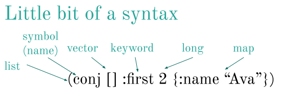
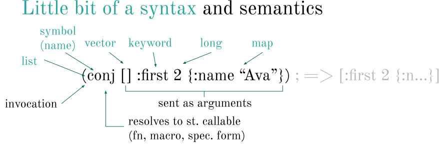
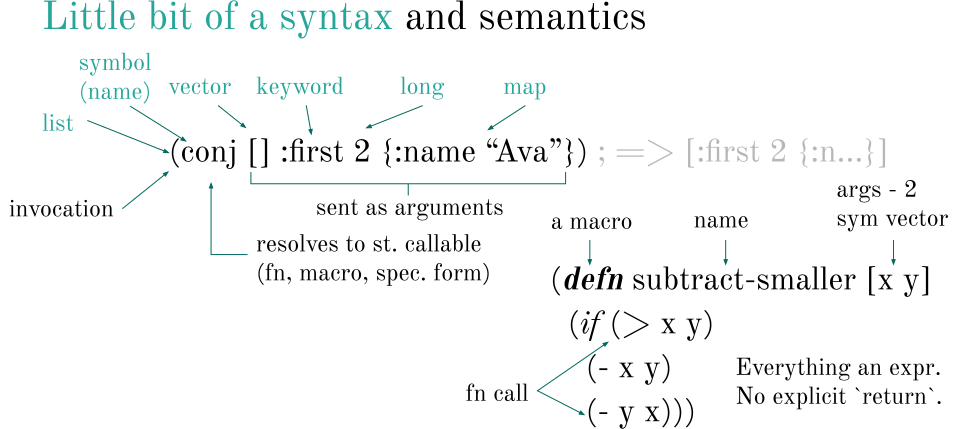

10 Clojure primer
A very brief introduction to Clojure for a would-be users of Wolframite not familiar with the language.
10.1 The essence of Clojure
It’s impossible to summarize any language in just a few words. But we can say that simplicity and expressiveness are some of the core values of Clojure. It has been designed to allow you to express your thoughts concisely, to write programs that avoid some common sources of errors (especially those caused by shared mutable data), and produce code that is well suited to evolution over time.
10.2 Elementary syntax
Let’s start by comparing how adding a few elements to a list looks like in Wolfram, Python, and Clojure:
Let’s start Wolfram to be ready for our examples underneath:
(wl/start!){:status :ok, :wolfram-version 14.1}| Wolfram | Join[{}, {"first", 2, <|"name" -> "Ava"|>}] |
| Python | []+["first",2,{"name": "Ava"}] |
| Clojure | |
We see here a few basic data structures: a [vector], similar to Wolfram/Python lists, and a map {"key": "value"}, similar to Python dictionaries / Wolfram associations. One interesting difference is that , commas in Clojure are optional.
"Strings" and numbers 1, 2, ... are the same. Clojure’s nil is just like Python’s None
Now, how would we define a function that sums two numbers?
| Wolfram | plus[x_, y_] := Plus[x, y] |
| Python | def plus(x, y):
return x + y |
| Clojure | |
Now we are ready to learn a little more about how to read Clojure code.
Clojure is a Lisp, i.e. the code consists of the same data you use as a programmer: lists, vectors, maps, symbols, etc.
Lists and vectors are both sequential data structures. Vectors support efficient access to any element, while lists are always read from start.
Keywords are similar to strings, but tuned for use as keys in maps. Additionally, a keyword may be used as a function that takes a map and looks up the corresponding value:
(:name {:name "Ava"})"Ava"(map :name [{:name "Ava"} {:name "Boudicca"}])("Ava" "Boudicca")This is the syntax, i.e. how characters become data. Now, on to semantics, i.e. what does the data mean:
A list is interpreted as an invocation (e.g. a function call), where the first element is a symbol that resolves to something invocable (a function, a special form, or a macro; we don’t need to care about their differences here). All the other elements are arguments to the function.
The same code structure is used for everything, including defining functions:
The defnhere defines a new function called subtract-smaller, taking two arguments x and y.
Noteworthy:
>, - are just function calls. if is a “special form” and defn is a macro, but they behave very similarly to functions.
Notice there is no else. There are no reserved/special words in Clojure.
10.3 Basics
- Everything returns a value (which may be
nil). F.ex.ifreturns whatever the evaluated branch returned. - Clojure is very tolerant of
nil, most functions treat it as an empty value - you canmapover it (gettingnilback), append to it (getting back a list with the appended element) etc. - Whitespace is not significant. Commas are treated as a whitespace, and used occasionally for readability
- Booleans:
trueandfalse. All predicates and conditional expressions treat bothfalseandnilasfalseand everything else astrue(also called “truthy”). - Clojure runs on the Java Virtual Machine (JVM) and you can directly call Java methods. (Learn more about Clojure ↔︎ Java interoperability.)
- Clojure is intended for interactive development, also known as REPL-driven development, where you build and evolve your application while it is running. You may be used to a very similar this style of development from Python or Wolfram notebooks.
10.4 Evaluation
Now is a good time to revisit Understanding Wolframite and read about the three forms of Wolframite expressions (raw, evaluated, and Wolfram string).
A point worth re-iterating is that Wolframite expressions are not evaluated by Clojure but are sent ± as-is to Wolfram for evaluation. Thus, you may not mix Clojure and Wolframite expressions freely. But there is one exception to that - a Wolframite expression may contain Clojure expressions that can be evaluated fully on the Clojure side and replaced with the result, before being sent to Wolfram. Let’s have a look at a few examples:
Clojure-side only:
(+ (* 3 (math/pow 2 2)))12.012.0
Wolfram-only:
(wl/! (w/+ (w/* 3 (w/Power 2 2))))12Mixed, with Clojure evaluated before sending the form to Wolfram:
(wl/! (w/+ (w/* 3 (w/Power (+ 1 1) 2))))12This is how the expression is evaluated before we resolve aliases and turn it into Wolfram and send it over to the kernel:
(w/+ (w/* 3 (w/Power (+ 1 1) 2)))(+ (* 3 (Power 2 2)))Notice that you may nest Clojure-only expression, which does not depend on the surrounding Wolfram context, inside a Wolframite expression, but you cannot do the opposite, i.e. nest a Wolframite expression inside a Clojure expression:
(try
(wl/! (+ (w/* 3 (w/Power (+ 1 1) 2))))
(catch Exception e
(str e)))"java.lang.ClassCastException: Cannot cast clojure.lang.PersistentList to java.lang.Number"This fails because we are passing a Wolframite expression (a list) to the Clojure + function, but it only works with numbers. We’d need to evaluate the expression first:
(+ (wl/! (w/* 3 (w/Power (+ 1 1) 2))))1210.5 How to work with Clojure: the REPL and interactive development
Contrary to most languages, Clojure is designed to be written incrementally, in an interactive session. While this is alien to most developers, who are used to the write-compile-run cycle, you may already be well familiar with this style of coding from Wolfram or Python notebooks. In both cases, your “program” is running all the time and you keep adding to it, building on the previous code and state, and can examine the state at any moment.
You can read more on Clojure’s take on interactive development a.k.a. REPL-driven development on the official Clojure website.
10.6 Resources for further learning
- The Clojure cheatsheat is a good place to look for functions.
- The 100 Most Used Clojure Expressions